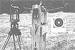
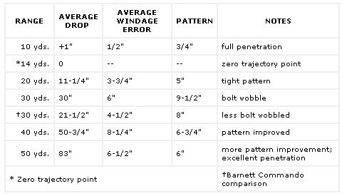

Main
Just how effective is a crossbow? To answer that question, several of MOTHER'sstaffers took to the field with our projectprototype equipped with a 175-pound prod ... the smaller takedown model with a 75-pound draw weight ...a $449 Barnett Commando (a quality commercial crossbow) rated at175 pounds ...a recurve bow rated at 54pounds, full (30") draw ...and a 70-poundcompound bow. We were interested in eachweapon's range, accuracy, and penetratingpower ...but, ultimately, we were search ing for the crossbow's proper niche in the or der of things.
Now we weren't interested in testing head-to-head with the Barnett offering, and we couldn't fairly pit a hand-held bow against a brace-mounted crossbow. So what we did was make a series of test firings with our standard model at distances of 10, 20, 30, 40, and 50 measured yards. Each group consisted of five shots with the same 24.94-gram overall (126.3-grain field point) Easton 14" aluminum bolt, and the resulting patterns then were measured and recorded. The crossbow was mounted and leveled in a sturdy brace, and a surveyor's transit was used to establish a direct line of sight to a given point on the target. The deviation of the points of impact from the sighting point was also noted. Wind conditions were fairly calm throughout the test.
The chart below encapsulates our findings. As you can see, the homemade crossbow held a respectable pattern, even out to 50 yards. (We suspect it would do the same beyond that point, but that's considered expert's range.) At that distance, drop was considerable (i.e., the weapon's barrel would have to be elevated in order to hit a target in a level line of sight) ...but the same situation existed in the case of the more traditional hand-held bows.
Penetration was never a problem with any of the weapons we tested, since all the shafts buried themselves-some to the fletching-in the 12" of extruded polystyrene we used for a target backing. Considering the difference in draw weights between the traditional bows and the crossbows (and accounting for the standard arrows' additional mass), we could infer that prod strengths of more than 125 pounds amount to overkill; the extra power probably offers little, but taxes strings, bolts, and cocking convenience heavily. However, an understrength prod would be even less desirable unless it was matched with a short, light bolt. Our takedown pistol model uses a 75-pound prod and a 6" aluminum bolt, and has a power stroke of 6-1/4" compared to the larger weapon's 8-1/2" ... fine for target shooting, but not really useful for hunting.
Regardless of draw weight, string life can be extended and bolt velocity increased slightly by applying a lubricative wax to the string and the barrel's shoulder slides.
In summary, much as we hate to burst a romantic balloon, we'll have to concede to the facts: Although a crossbow has the advantages of compactness and mechanical cocking and locking (it can be held at full draw without strain on the user), it is really no more accurate than a conventional bow in proficient hands ...can't be loaded and fired as quickly ... and doesn't even approach the overall effectiveness of a rifle. Nonetheless, it's a valid sporting tool that's slowly but surely coming into its own once again.
FIELD TEST RESULTS
MODEL TESTED: Homemade, aluminum frame; walnut inserts; Delrin shoulder slides
PROD: Barnett Commando, heat /pressure-cured fiberglass, 175-pound draw
WEIGHT: 6 pounds, 5-1/2 ounces
OVERALL LENGTH: 31"
OVERALL WIDTH: 26 "
POWER STROKE: 8-1/2"
SIGHTS: Open, adjustable rear post
BOLT: Easton, 14" aluminum 24.94 grams overall including 126.3-grain fieldpoint
|
 |
 |
|